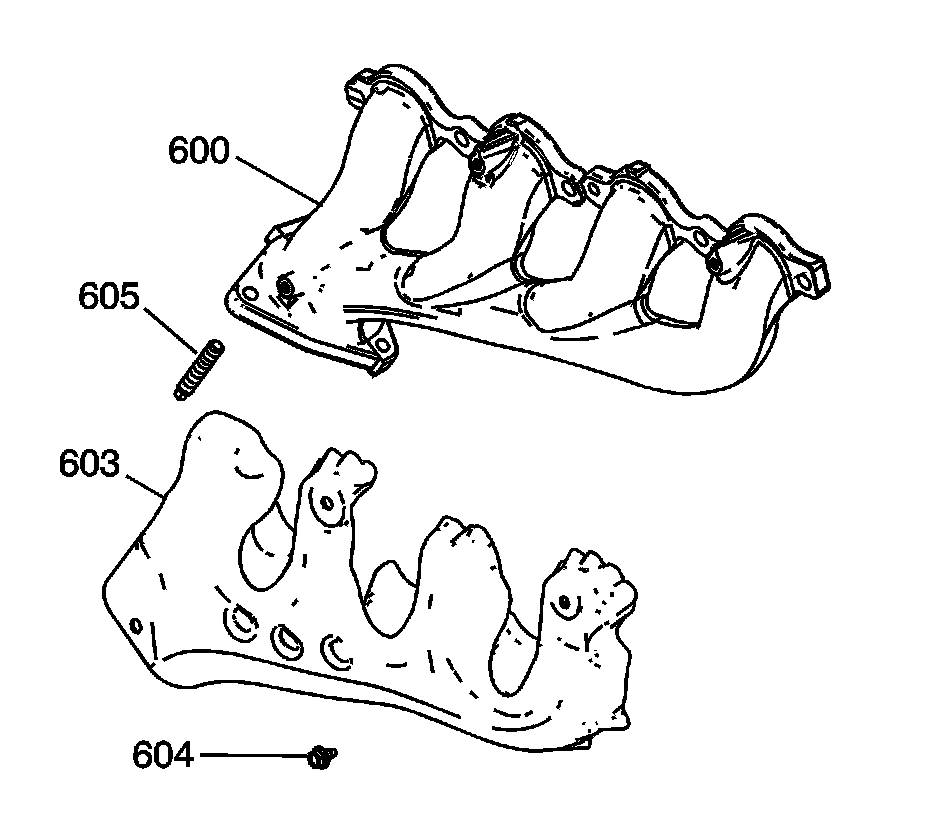
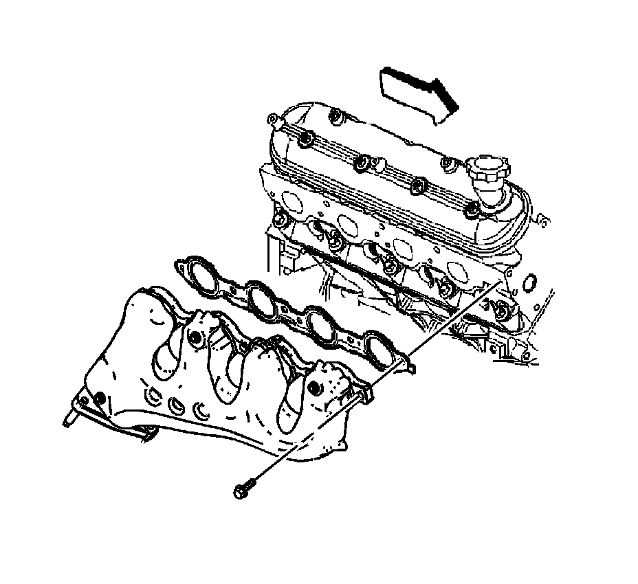

96. Exhaust Manifold Installation - Right Side
Exhaust Manifold Installation - Right Side

Notice: Refer to Fastener Notice.
Important:
^ Tighten the exhaust manifold bolts as specified in the service procedure. Improperly installed and/or leaking exhaust manifold gaskets may affect vehicle emissions and/or on-board diagnostic (OBD) II system performance.
^ The cylinder head exhaust manifold bolt hole threads must be clean and free of debris or threadlocking material.
^ Do not apply sealant to the first 3 threads of the bolt.
Install the heat shield (603) and bolts (604).
Tighten the heat shield bolts to 9 N.m (80 lb in).
1. Install the exhaust pipe studs (605).
Tighten the studs to 20 N.m (15 lb ft).

2. Apply a 5 mm (0.2 in) wide band of threadlock GM P/N 12345493 (Canadian P/N 10953488), or equivalent, to the threads of the exhaust manifold bolts. Refer to Sealers, Adhesives, and Lubricants.
3. Install the exhaust manifold, NEW gasket and bolts.
1. Tighten the exhaust manifold bolts a first pass to 15 N.m (11 lb ft). Tighten the exhaust manifold bolts beginning with the center 2 bolts. Alternate from side-to-side, and work toward the outside bolts.
2. Tighten the exhaust manifold bolts a final pass to 20 N.m (15 lb ft). Tighten the exhaust manifold bolts beginning with the center 2 bolts. Alternate from side-to-side, and work toward the outside bolts.
4. Using a flat punch, bend over the exposed edge of the exhaust manifold gasket at the rear of the left cylinder head.